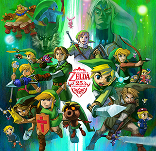

Acerca de...
The Legend of Zelda es una serie de videojuegos de acción-aventura creada por los diseñadores japoneses Shigeru Miyamoto y Takashi Tezuka, y desarrollada por Nintendo, empresa que también se encarga de su distribución internacional. Su trama por lo general describe las heroicas aventuras del joven guerrero Link, que debe enfrentarse a peligros y resolver acertijos para ayudar a la Princesa Zelda a derrotar a Ganondorf y salvar su hogar, el reino de Hyrule.